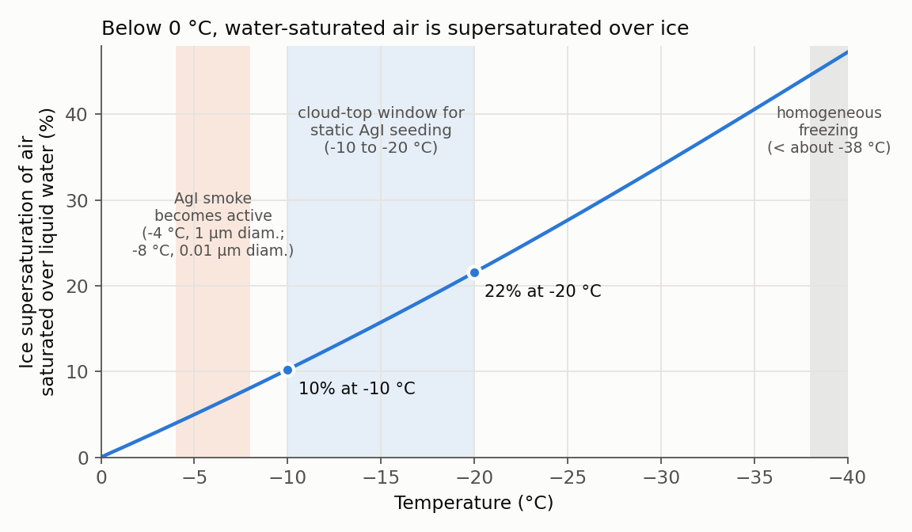

What Is Cloud Seeding? The Physics of Planting Seeds in a Cloud
In my first lab meeting of March 2026 I gave a big-picture talk titled “What is Cloud Seeding?”. This note re-checks that slide deck and my Q&A preparation notes against the original papers and the textbook, and keeps only what I could verify. The guiding question is simple: if we add something to a cloud, which link in the rain-making chain changes?
Key takeaway. Cloud seeding does not make rain where there are no clouds. It picks the bottleneck that is holding back precipitation in an existing cloud, a shortage of ice nuclei in a cold cloud or slow collision–coalescence in a warm cloud, and adds particles that relieve that bottleneck. A cloud without such a bottleneck offers little to gain.
Two roads to rain
A cloud droplet of 10 µm radius and a raindrop of 1 mm radius differ in volume by a factor of about one million. A single cloud droplet barely falls, so the water of a great many droplets must end up in one particle before it can rain. There are two broad pathways (Bruintjes 1999; Houze 2014).
| Warm rain | Cold rain (ice process) | |
|---|---|---|
| Cloud | warmer than 0 °C all the way to cloud top | cloud top colder than 0 °C |
| Key processes | condensation → collision–coalescence | ice formation → deposition growth → riming and aggregation |
| What starts it | a droplet larger than its neighbours (collector) | an ice nucleating particle (INP) |
| Typical bottleneck | condensation yields small, similar droplets that rarely collide | supercooled droplets that stay liquid below 0 °C and too few ice nuclei |
| Matching seeding | hygroscopic seeding | glaciogenic seeding |
In real clouds the two pathways often operate together. Which one dominates at the time decides how a cloud responds to seeding, a point Bruintjes (1999) emphasizes.
Cold clouds: droplets do not freeze at 0 °C
Homogeneous freezing, where a pure droplet freezes without help, requires temperatures colder than about −35 to −40 °C. Clouds between 0 and about −38 °C therefore often contain unfrozen, supercooled droplets (Houze 2014). In that range ice needs a particle whose surface resembles ice: an ice nucleus.
Natural ice nuclei are scarcer than one might expect. According to Houze’s summary, clay-mineral dust works at roughly −10 to −37 °C, while at warm supercooling (−1 to −10 °C) only plant-derived bacteria make ice, and in very low concentrations. The shortage of ice nuclei at warm supercooling is the starting point for artificial ice nuclei.
Once ice exists, it grows fast. At the same temperature the saturation vapour pressure over ice is lower than over water, so air that is saturated with respect to water is supersaturated with respect to ice. The crystals take up vapour and grow while the surrounding droplets evaporate: the Wegener–Bergeron–Findeisen (WBF) process. Schaefer (1946) explained his own observation that adding droplets only made the crystals grow in the same way (Schaefer 1946).

The difference is about 10% at −10 °C and about 22% at −20 °C (Murphy and Koop 2005). Since supersaturation over water in clouds rarely exceeds 1%, ice crystals grow under overwhelmingly favourable conditions compared with droplets.
Four ways ice gets started
How an ice nucleus triggers ice depends on where the particle sits (Houze 2014).
| Mode | What happens |
|---|---|
| Deposition nucleation | vapour deposits directly as ice on the particle surface, skipping the liquid phase |
| Condensation (-freezing) nucleation | the ice nucleus also serves as the CCN, and the droplet that forms on it freezes when cooled |
| Immersion freezing | another particle already inside a droplet starts freezing as the temperature drops |
| Contact nucleation | an airborne ice nucleus hits a supercooled droplet, which freezes on contact |
In every mode the key is lattice similarity. Ice is a highly ordered crystal; the more a substrate’s lattice misfits that of ice, the more strain and dislocation the interface carries and the lower the nucleating efficiency.
1946–1947: dry ice and silver iodide
Schaefer (1946). He made a supercooled cloud in a cold chamber (−10 °C at the top, −20 °C at the bottom, about −15 °C in the middle) and added carbon, volcanic dust, talc and many other dusts, but the cloud never froze. A piece of dry ice, however, turned the whole cloud into ice crystals in less than 10 seconds (Schaefer 1946). A rod cooled in liquid air, or a copper rod at −35 °C placed in a −12 °C cloud, also released streams of ice crystals. Dry ice is thus not an ice nucleus but a coolant: it chills the surrounding air below the homogeneous-freezing limit and produces ice particles in huge numbers. Schaefer closed the paper by announcing a large-scale test of dropping dry ice from an aircraft, and the first cloud was seeded that same year (Bruintjes 1999).
Vonnegut (1947). Working in the same laboratory, Vonnegut searched crystallographic data for the substance most similar to ice (Vonnegut 1947).
| Ice | Silver iodide (AgI) | Difference | |
|---|---|---|---|
| Crystal system | hexagonal | hexagonal | — |
| Lattice constant a | 4.535 Å | 4.585 Å | about 1.1% |
| Lattice constant c | 7.41 Å | 7.490 Å | about 1.1% |
Both dimensions agree to within about 1%. The first AgI powder he tried did nothing; the sample later turned out to be contaminated with soluble salts. AgI vaporized in a flame or on a hot filament then produced a fine smoke with enormous numbers of ice nuclei. Smoke of about 1 µm diameter was effective from −4 °C, and smoke of about 0.01 µm (100 Å) diameter from −8 °C. His generator consumed 1 mg of AgI per second and produced about \(10^{13}\) effective nuclei per second. Released into a thin supercooled fog at −4 °C, the smoke turned the fog into ice crystals for at least 150 ft (about 46 m) from the generator.
The figure of \(10^{13}\) nuclei per second is a 1947 measurement on one laboratory generator. The same paper estimates that 1 mg should in theory yield about \(3\times10^{14}\) particles and acknowledges the gap of more than an order of magnitude. How much AgI actually activates in the real atmosphere is a separate question that this note does not address. Lattice constants are quoted slightly differently across sources, so the table uses Vonnegut’s original values.
Three seeding concepts
| Concept | Target bottleneck | Expected causal chain | Caveat |
|---|---|---|---|
| Static (glaciogenic) | too few ice nuclei | AgI or dry ice → more ice crystals → deposition and riming growth → precipitation | narrow window: for convective clouds, limited to continental cold-based clouds with tops near −10 to −20 °C while ample supercooled liquid water is present |
| Dynamic (glaciogenic) | weak updraft | massive freezing → release of latent heat of fusion → buoyancy and stronger updraft → larger cloud | long chain, large natural variability of convection; Houze notes the effect has never been proven in cumuliform clouds |
| Hygroscopic (warm) | slow collision–coalescence | large hygroscopic particles → broader droplet spectrum → earlier collision–coalescence | no effect in clouds where coalescence is already efficient, such as maritime clouds |
The history and evaluation of these concepts are covered separately in my review of Bruintjes (1999).
What gets released
| Material | Target cloud | How it works | Source |
|---|---|---|---|
| Dry ice (solid CO₂) | supercooled cloud | a coolant, not a nucleus: chills the air locally and creates ice crystals in huge numbers | Schaefer (1946) |
| Silver iodide (AgI) | supercooled cloud | ice-like lattice acts as an ice nucleus; burned or vaporized into a fine smoke | Vonnegut (1947), Houze (2014) |
| Hygroscopic salts (e.g., NaCl) | warm cloud | attract water, grow into large drops and start collision–coalescence | Bruintjes (1999) |
The talk also introduced research-stage materials such as BiI₃, TiO₂-coated NaCl (core–shell) and charged water droplets, but I could not trace the original source of their performance figures, so they are left out of the table. Charge-based seeding is discussed in my review of negative-ion seeding.
Why warm-cloud hygroscopic seeding
The bottleneck of warm rain is a size gap. Condensation makes many small droplets of similar size, while collision–coalescence needs a collector that is clearly larger than its neighbours. Bruintjes (1999) describes two ways hygroscopic seeding tries to bridge that gap.
- Raindrop-embryo approach: salt particles larger than 10 µm in diameter skip the CCN stage and start collision–coalescence directly. It needs large amounts of salt, and spreading it evenly through a cloud is hard.
- Flare approach: burning flares release salt particles of about 0.5 µm diameter below cloud base. The large artificial CCN activate first and take up vapour, fewer natural CCN activate, and fewer droplets grow larger, broadening the spectrum. In a randomized experiment in South Africa (1991–1996, 127 storms), seeded storms produced significantly more rain than control storms at the 95% confidence level. Bruintjes adds that fundamental problems such as dispersion and transport of the material remain.
I chose this pathway for three reasons. First, the causal chain closes with condensation and collision–coalescence alone, without ice processes, so a zero-dimensional parcel model can test it one link at a time. Second, the same material can give different results depending on particle size, hygroscopicity (κ), dose and injection timing as well as background aerosol and updraft, which makes for a clear sensitivity question. Third, if competition for vapour is the key, I also need to ask whether the wrong conditions might delay rain instead. These questions continue in my note on warm-cloud microphysics and the PySDM experiments.
Addendum: suitability by cloud type
Later (September 2026) I revisited how well each cloud type suits research on warm-cloud hygroscopic seeding. This is my own qualitative judgment based on the typical phase and main precipitation process, not a quantitative criterion from the literature.
| Cloud type | Typical phase | Main precipitation process | Suitability |
|---|---|---|---|
| Cumulus | liquid, sometimes mixed | condensation → collision–coalescence | highly suitable |
| Stratocumulus | mostly liquid, mixed when cold | autoconversion + accretion → drizzle | potentially suitable |
| Stratus | mostly liquid | weak collision–coalescence → drizzle | limited |
| Altocumulus | liquid / supercooled / mixed | liquid coalescence or ice process | limited |
| Nimbostratus, Altostratus | mostly mixed / ice | deposition, aggregation, melting | generally unsuitable |
| Cirrus family | ice | ice nucleation, deposition | generally unsuitable |
“Unsuitable” does not mean the cloud cannot be modified; it means it is not a fitting target for studying the warm hygroscopic pathway.
Open questions
- How much of the ice-nucleating activity measured in the laboratory survives turbulence, competition with natural ice nuclei and particle removal in a real cloud?
- How can one confirm that the released material actually reached the target volume of the target cloud?
- What must be measured to close both the statistical signal and the physical evidence against the large natural variability of precipitation?